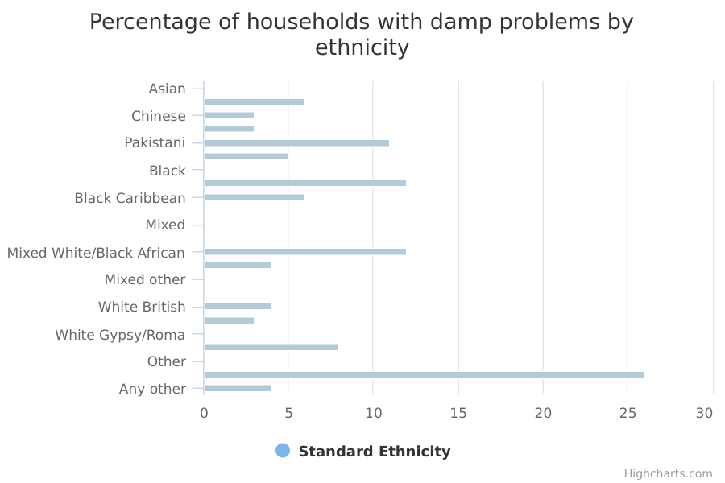

Housing with damp problems
The main facts and figures show that:
-
in 2015/16, 4% of households in England lived in a home with damp problems – around a million homes
-
Arab, Black African, Pakistani and Any other White households were more likely to live in a home with damp problems compared with White British households
Things you need to know
Compared with White British households, ethnic minority households tend to be younger, to have lived in England for a shorter time and to be located in urban areas. They are also likely to live in larger households.
To ensure that there is a large enough number of ethnic minority households to produce reliable findings, the Department for Communities and Local Government has added together 2 years of data (2014/15 and 2015/16) from the English Housing Survey (EHS).
Information about households in the EHS Headline and Annual reports is normally based on a 12-month period (April to March). As the statistics on this page combine data from 2014/15 and 2015/16, the numbers here may not match the figures in those individual reports.
The commentary has focused on findings based on subgroups of at least 30 households to ensure that the findings reported are reliable.
The number of people interviewed from the Gypsy, Traveller or Irish Traveller, Mixed White and Asian, Mixed White and Black Caribbean and Any Other Mixed/Multiple ethnic groups is very small. To avoid disclosing personal information about individuals in those groups, information about them is not presented in some of the tables or charts.
It is not possible to look in detail at the characteristics of the type of households with damp problems. This is because the sample sizes of individual ethnic groups when further broken down by other characteristics such as income, socio-economic group, region or age are not large enough to give reliable estimates.
The EHS is a ‘sample survey’. It collects information from a random sample of the population to make generalisations (reach ‘findings’) about the total population.
For example, EHS findings might include the percentage of households with damp problems.
Unless stated otherwise, the commentary for this data only includes reliable, or ‘statistically significant’, findings.
Findings are statistically significant when we can be confident that they are reflective of the total population rather than just the survey sample.
What the data measures
This data measures the percentage of households in England who had damp problems, broken down by ethnicity. The damp problem could have been in one or more rooms in the property.
The figures are percentages of all households within each ethnic group.
A home with a damp problem is one with any of the following:
- rising damp
- penetrating damp or serious condensation/mould in any of the rooms inspected
Rising damp refers to the slow upward movement of water in the lower sections of walls and other ground-supported structures. Penetrating damp is another common form of dampness where water penetrates the outside of a building (through walls, roofs or windows) and appears inside.
The figures come from the English Housing Survey 2014/15 and 2015/16.
The survey involves face-to-face interviews with about 13,300 randomly selected households every year. These are used to make estimates for the 22.6 million households in England.
The EHS is a national survey of people's housing circumstances and the condition and energy efficiency of homes in England.
The information relates to households. A household is one person or a group of people (not necessarily related) who have the accommodation as their only or main residence. If it is a group, they must share cooking facilities and also share a living room, sitting room or dining area.
The EHS has ethnicity information on the household reference person as well as all other members of the household. The ‘household reference person’ is the person in whose name the accommodation is owned or rented, or who is otherwise responsible for it.
Some households have people from different ethnic backgrounds; where this happens, we have used the ethnic background of the household reference person.
Nearly every household reference person – more than 99.8% interviewed – provided information on their ethnicity.
Why these ethnic categories were chosen
This data uses the standardised ethnic groups based on the 2011 Census.
White:
- English/Welsh/Scottish/Northern Irish/British
- Irish
- Gypsy, Traveller or Irish Traveller
- Any other White background
Mixed/Multiple ethnic groups:
- White and Black Caribbean
- White and Black African
- White and Asian
- Any other Mixed/Multiple ethnic background
Asian/Asian British:
- Indian
- Pakistani
- Bangladeshi
- Chinese
- Any other Asian background
Black/African/Caribbean/Black British:
- African
- Caribbean
- Any other Black/African/Caribbean background
Other ethnic group:
- Arab
- Any other ethnic group
Households with damp problems by ethnicity

Number and percentage of households with damp problems by ethnicity
| Asian | |||
|---|---|---|---|
| Bangladeshi | 6 | 5,853 | 103,335 |
| Chinese | 3 | 3,569 | 140,707 |
| Indian | 3 | 15,415 | 478,112 |
| Pakistani | 11 | 32,541 | 285,003 |
| Asian other | 5 | 12,902 | 240,993 |
| Black | |||
| Black African | 12 | 49,331 | 415,843 |
| Black Caribbean | 6 | 16,339 | 266,674 |
| Black other | withheld because a small sample size makes it unreliable | withheld because a small sample size makes it unreliable | withheld because a small sample size makes it unreliable |
| Mixed | |||
| Mixed White/Asian | withheld because a small sample size makes it unreliable | withheld because a small sample size makes it unreliable | withheld because a small sample size makes it unreliable |
| Mixed White/Black African | 12 | 8,653 | 73,586 |
| Mixed White/Black Caribbean | 4 | 3,851 | 94,085 |
| Mixed other | withheld because a small sample size makes it unreliable | withheld because a small sample size makes it unreliable | withheld because a small sample size makes it unreliable |
| White | |||
| White British | 4 | 736,528 | 18,969,280 |
| White Irish | 3 | 4,878 | 194,531 |
| White Gypsy/Roma | withheld because a small sample size makes it unreliable | withheld because a small sample size makes it unreliable | withheld because a small sample size makes it unreliable |
| White other | 8 | 78,668 | 1,006,085 |
| Other | |||
| Arab | 26 | 11,808 | 46,151 |
| Any other | 4 | 8,443 | 199,370 |
Summary
This data shows that:
-
4% of White British households lived in damp housing – around 737,000 households
-
Arab, Black African, Pakistani and Other White households were more likely to live in a home with damp problems – 26% (11,000), 12% (49,000), 11% (33,000) and 8% (79,000) of these households, respectively, had problems with damp
-
3% of Indian, White Irish, Chinese households in this sample lived in a home with damp – less likely than White British households – however, these survey estimates are not reliable enough to draw any conclusions about the total population
-
similarly, some ethnic groups in this sample were more or as likely to live in a home with damp as White British households – namely, White and Black African (12%), Bangladeshi (6%), Any other Asian background (5%), Caribbean (6%) and Any Other ethnic background (4%) – however, these survey estimates are not reliable enough to draw conclusions about the total population
Download image and data
Methodology and type of data
Type of data
Survey
Purpose of data source
The English Housing Survey (EHS) is a continuous national survey commissioned by the Department for Communities and Local Government (DCLG). It collects information about:
- people’s housing circumstances
- the condition and energy efficiency of housing
Methodology
The EHS consists of:
- face-to-face interviews with a random sample of about 13,300 households a year
- a physical inspection of the homes of about 6,000 of the interviewed households – these are selected at random and carried out by a surveyor
The surveyor also inspects a random sample of about 200 properties identified by the interviewer as vacant.
Weighting:
Weighting is used to adjust the results of a survey to make them representative of the population and improve their accuracy.
For example, a survey which contains 25% females and 75% males will not accurately reflect the views of the general population which we know is around 50% male and 50% female.
Statisticians rebalance or ‘weight’ the survey results to more accurately represent the general population. This helps to make them more reliable. In the EHS, weighting makes the results more representative of the 22.6 million households in England.
Rounding
Estimates in the charts and tables are given to the nearest whole number.
Further technical information
Data source details
Source
Department
Department for Communities and Local Government
Type of statistic
National Statistics
Publication frequency
Annual
Suppression rules
The Department for Communities and Local Government (DCLG) has ‘suppressed’ estimates based on fewer than 30 households.
‘Suppression’ means these figures have not been included in the data because the numbers involved are too small to draw any meaningful conclusions.
Where the size of the ethnic group population is small enough that an individual’s identity could be revealed, some other figures have also been excluded.
Disclosure control
The data is deposited in the UK Data Archive, after applying a wide range of disclosure control.
Strictly disclosure-controlled data in the form of derived variables is available under the End-User Licence (for example, ethnicity is given as White/ethnic minority).
Data sets with some more details are made available under Special Licence after the user has applied to the English Housing Survey team for access.
Data that could potentially reveal someone’s identity (such as a postcode) is available only through UKDA Secure Access. To gain access, a user must complete special training, including on disclosure control.
Download the data
households-with-damp-problems.csv
This file contains the following: ethnicity, value, denominator, numerator and sample size